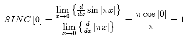
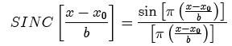

The sinc function is sin(πx)/(πx). Because the denominator is zero at the origin, the SINC[0] is defined to be 1. The factor of π is included here so that the zeros of the sinc function occur at integer values.
Because both numerator and denominator are zero at the origin, the amplitude of SINC [0] may be determined from the ratio of the derivatives via L'Hospital's rule:

The sinc function may be shifted and scaled:

Parameters:
Support: infinite
Area: 1 (evaluated via integration in the complex plane using Cauchy's theorem)
Symmetry: even
Read more about the sinc function at: